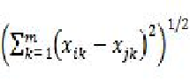
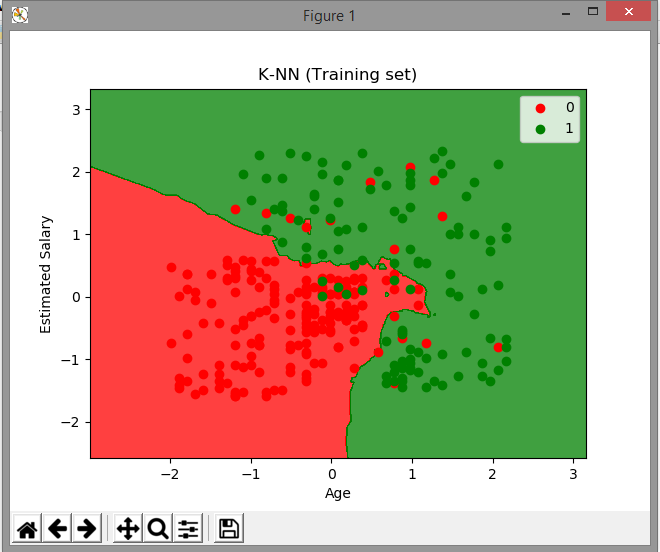
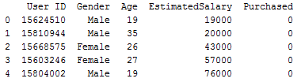

K-Nearest Neighbor¶
Pendahuluan¶
1. Pengertian Nearest Neighbor B
Algoritma Nearest Neighbor (NN) merupakan algoritma pendekatan untuk mencari kasus dengan menghitung kedekatan antara kasus baru dengan kasus lama yaitu berdasarkan pencocokan bobot dari sejumlah atribut yang ada (Kusrini & Emha, 2009). Nearest Neighbor akan mengklasifikasikan hanya jika atribut dari kasus baru sesuai dengan salah satu atribut pada kasus lama (Ricci, F et al., 2010). Perhitungan jarak kedekatan antara kasus baru dengan kasus lama biasanya memakai metrik jarak. Satuan jarak yang umumnya digunakan adalah euclidian.
Algoritma k-Nearest Neighbor adalah algoritma supervised learning dimana hasil dari instance yang baru diklasifikasikan berdasarkan mayoritas dari kategori k-tetangga terdekat.
Tujuan dari algoritma ini adalah untuk mengklasifikasikan obyek baru berdasarkan atribut dan sample-sample dari training data. Algoritma k-Nearest Neighbor menggunakan Neighborhood Classification*sebagai nilai prediksi dari nilai *instance yang baru.
2. Algoritma k - Nearest Neighbor (k-NN)
k-Nearest Neighborhood* (k-NN) adalah suatu metode yang menggunakan algoritma supervised dimana hasil dari query instance yang baru diklasifikasikan berdasarkan mayoritas dari label class pada k-NN. Tujuan dari algoritma k-NN adalah mengklasifikasikan objek baru berdasarkan atribut dan training data.
Algoritma k-NN bekerja berdasarkan jarak terpendek dari query instance ke training data untuk menentukan k-NN-nya. Salah satu cara untuk menghitung jarak dekat atau jauhnya tetangga menggunakan metode euclidian distance.
Ecludian Distance sering digunakan untuk menghitung jarak. Euclidian Distance berfungsi menguji ukuran yang bisa digunakan sebagai interpretasi kedekatan jarak antara dua obyek, di bawah ini merupakan rumus Ecludian Distance:

Dimana,
Xik = nilai X pada training data
Xjk = nilai X pada testing data
m = batas jumlah banyaknya data
Jika hasil nilai dari rumus di atas besar maka akan semakin jauh tingkat keserupaan antara kedua objek dan sebaliknya jika hasil nilainya semakin kecil maka akan semakin dekat tingkat keserupaan antar objek tersebut. Objek yang dimaksud adalah training data dan testing data.
Dalam algoritma ini, nilai k yang terbaik itu tergantung pada jumlah data. Ukuran nilai k yang besar belum tentu menjadi nilai k yang terbaik begitupun juga sebaliknya.
Langkah-langkah untuk menghitung algoritma k-NN:
-
Menentukan nilai k.
-
Menghitung kuadrat jarak euclid (query instance) masing-masing objek terhadap training data yang diberikan.
-
Kemudian mengurutkan objek-objek tersebut ke dalam kelompok yang mempunyai jarak euclid terkecil.
-
Mengumpulkan label class Y (klasifikasi Nearest Neighborhood).
Pada fase pembelajaran, algoritma ini hanya melakukan penyimpanan vektor-vektor fitur dan klasifikasi dari data pembelajaran. Pada fase klasifikasi, fitur-fitur yang sama dihitung untuk data test (yang klasifikasinya tidak diketahui). Jarak dari vektor yang baru ini terhadap seluruh vektor data pembelajaran dihitung, dan sejumlah k buah yang paling dekat diambil. Titik yang baru klasifikasinya diprediksikan termasuk pada klasifikasi terbanyak dari titik-titik tersebut.
Nilai k yang terbaik untuk algoritma ini tergantung pada data; secara umumnya, nilai k yang tinggi akan mengurangi efek noise pada klasifikasi, tetapi membuat batasan antara setiap klasifikasi menjadi lebih kabur. Nilai k yang bagus dapat dipilih dengan optimasi parameter, misalnya dengan menggunakan cross-validation. Kasus khusus di mana klasifikasi diprediksikan berdasarkan data pembelajaran yang paling dekat (dengan kata lain, k = 1) disebut algoritma nearest neighbor.
Ketepatan algoritma k-NN ini sangat dipengaruhi oleh ada atau tidaknya fitur-fitur yang tidak relevan, atau jika bobot fitur tersebut tidak setara dengan relevansinya terhadap klasifikasi. Riset terhadap algoritma ini sebagian besar membahas bagaimana memilih dan memberi bobot terhadap fitur, agar performa klasifikasi menjadi lebih baik.
Terdapat beberapa jenis algoritma pencarian tetangga terdekat, diantaranya:
· Linear scan
· Pohon kd
· Pohon Balltree
· Pohon metrik
· Locally-sensitive hashing (LSH)
Kelebihan dan kekurangan K-NN
- Kelebihan k-NN
a. Algoritma k-NN ini memiliki konsistensi yang kuat. Ketika jumlah data mendekati tak hingga, algoritma ini menjamin error rate yang tidak lebih dari dua kali Bayes error rate (error rate minimum untuk distribusi data tertentu).
b. k-NN tangguh terhadap training data yang noisy dan efektir apabila data latihnya beesar
- Kelemahan k-NN
a. k-NN perlu menentukan nilai dari parameter k (jumlah dari tetangga terdekat)
b. Pembelajaran berdasarkan jarak tidak jelas mengenai jenis jarak apa yang harus digunakan dan atribut mana yangg harus digunakan untuk mendapatkan hasil yang terbaik.
c. Biaya komputasi cukup tinggi karena diperlukan perhitungan jarak dari tiap sample uji pada keseluruhan sample latih.
- Implementasi
Langkah.1) Pilih nomor K tetangga
Langkah.2) Ambil K tetangga terdekat dari titik data baru, sesuai dengan Euclidean Distance Langkah.3) Di antara tetangga K ini, hitung jumlah titik data dalam setiap kategori Langkah.4) Tetapkan titik data baru ke kategori tempat Anda paling banyak menghitung tetangga.
Implementasi¶
Bagian 1 - Pemrosesan Data Sebelumnya¶
Langkahh 1 : Mengimpor perpustakaan
impor numpy sebagai np
impor matplotlib.pyplot sebagai plt
impor panda sebagai pd langkah ke 2 : Mengimpor dataset dataset berisi informasi pengguna jaringan, disini hanya memprediksi bahwa pengguna tertentu mengklik iklan dan membeli produk tertentu atau tidak. Jadi tujuannya di sini adalah untuk membuat classifier yang akan menempatkan setiap pengguna ke dalam kategori yang benar dengan memprediksi apakah dia membeli produk atau tidak.
dataset = pd.read_csv ('Sosial_Media.csv') Langkah ke 3 : mencetak entri pertama dari dataset
print (dataset.head())Fitur-fitur berikut ini dianggap sebagai variabel independen
-
Usia
-
Taksiran Gaji
-
UserId
-
Gender
langkah ke 4 : Menyimpan variabel dependen dalam y yaitu Dibeli yaitu 1 jika pengguna membeli mobil dan 0 sebaliknya.
X = dataset.iloc[:, [2, 3]].values
y = dataset.iloc[:, 4].valuesMemisahkan dataset ke dalam set Pelatihan dan set Tes
Langkah ke 5 : Mengimpor pustaka Cross Validation yang sekarang dikenal sebagai ModelSelection dalam versi Python yang lebih baru
from sklearn.model_selection import train_test_splitLangkah ke 6 : membagi data menjadi 75% data untuk pelatihan dan 25% untuk menguji data
X_train, X_test, y_train, y_test = train_test_split(X, y, test_size = 0.25, random_state = 0) Penskalaan Fitur
Langkah ke 7 : menerapkan penskalaan fitur karena kami ingin prediksi yang akurat, yaitu kami ingin memprediksi pengguna mana yang akan membeli mobil atau tidak.
from sklearn.preprocessing import StandardScaler Langkah ke 8 : Membuat Objek Skalar standar dari Kelas Preprocessing dan Scaling X_train dengan mencocokkan objek Standard Scalar ke Matrix of Features X_train Menskalakan X_test dengan dasar yang sama
sc = StandardScaler ()
X_train = sc.fit_transform (X_train)
X_test = sc.transform (X_test)
Langkah ke 9 : Untuk melihat perbedaan dan mengonfirmasi bahwa mereka hampir mencapai skala yang sama.
print (X_train)
cetak (X_test) Bagian 2 - Memasukkan K-NN. Model¶
Langkah ke 10 : kita perlu mengimpor perpustakaan scikit.neighbours dan dari sana kita akan mengimpor KNN Classifier
from sklearn.neighbors import KNeighborsClassifier
classifier = KNeighborsClassifier (n_neighbors = 5, metric = 'minkowski', p = 2) Langkah ke 11 : Sekarang kita memasukkan objek classifier ke set pelatihan kita
classifier.fit (X_train, y_train)Bagian 3 - Memprediksi hasil kumpulan Tes¶
Langkah ke 12 : Karena classifier telah sesuai dengan Dataset, kita dapat memprediksi Hasil dari set tes.
y_pred = classifier.predict(X_test)Langkah ke 13 : Menampilkan nilai prediksi dan Sekarang untuk menghitung keakuratan
print(y_pred)
c=0
for i in range(0,len(y_pred)):
if(y_pred[i]==y_test[i]):
c=c+1
accuracy=c/len(y_pred)
print("Accuracy is")
print(accuracy) Jadi saat menjalankan ini, Akan mendapatkan akurasi, selanjutnya adalah visualisasi data, yang membantu kami memvisualisasi kan keakuratan dan kesalahan model kita.
Bagian-4 - Visualisasi Data dan Matriks kebingungan¶
Memvisualisasikan hasil set Pelatihan
from matplotlib.colors import ListedColormap
X_set, y_set = X_train, y_train
X1, X2 = np.meshgrid(np.arange(start = X_set[:, 0].min() - 1, stop = X_set[:, 0].max() + 1, step = 0.01),
np.arange(start = X_set[:, 1].min() - 1, stop = X_set[:, 1].max() + 1, step = 0.01))
plt.contourf(X1, X2, classifier.predict(np.array([X1.ravel(), X2.ravel()]).T).reshape(X1.shape),
alpha = 0.75, cmap = ListedColormap(('red', 'green')))
plt.xlim(X1.min(), X1.max())
plt.ylim(X2.min(), X2.max())
for i, j in enumerate(np.unique(y_set)):
plt.scatter(X_set[y_set == j, 0], X_set[y_set == j, 1],
c = ListedColormap(('red', 'green'))(i), label = j)
plt.title('K-NN (Training set)')
plt.xlabel('Age')
plt.ylabel('Estimated Salary')
plt.legend()
plt.show()Memvisualisasikan hasil set Tes
from matplotlib.colors import ListedColormap
X_set, y_set = X_train, y_train
X1, X2 = np.meshgrid(np.arange(start = X_set[:, 0].min() - 1, stop = X_set[:, 0].max() + 1, step = 0.01),
np.arange(start = X_set[:, 1].min() - 1, stop = X_set[:, 1].max() + 1, step = 0.01))
plt.contourf(X1, X2, classifier.predict(np.array([X1.ravel(), X2.ravel()]).T).reshape(X1.shape),
alpha = 0.75, cmap = ListedColormap(('red', 'green')))
plt.xlim(X1.min(), X1.max())
plt.ylim(X2.min(), X2.max())
for i, j in enumerate(np.unique(y_set)):
plt.scatter(X_set[y_set == j, 0], X_set[y_set == j, 1],
c = ListedColormap(('red', 'green'))(i), label = j)
plt.title('K-NN (Training set)')
plt.xlabel('Age')
plt.ylabel('Estimated Salary')
plt.legend()
plt.show()

Sehingga muncul output seperti di bawah ini

Semoga bermanfaat :)
Referensi¶
https://medium.com/bee-solution-partners/cara-kerja-algoritma-k-nearest-neighbor-k-nn-389297de543e
https://www.scribd.com/doc/226650315/Makalah-Nearest-Neighbors#download